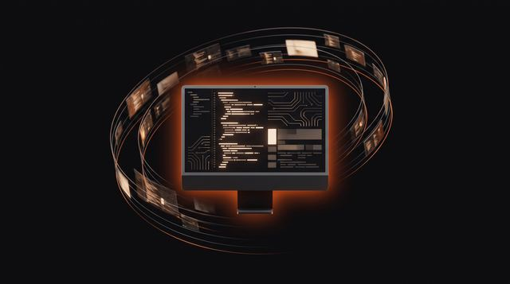

The canonical guides to the perception layer — how AI agents ingest, index, remember, search, edit, and stream video. Built on VideoDB, the database for continuous media.
Start free in the console → Read the docsWhat this layer of the stack is — the definitions the category was missing.
Video infrastructure for AI agents, explained — why video needs its own data layer, the six primitives, the moment-level data model, and a Python quic
Read guide →What a video understanding API is, how it differs from transcription and frame sampling, the four index types, and how to query video in a few lines o
Read guide →Video RAG explained — how retrieval-augmented generation works on video, why text chunking fails on footage, and how to return playable moments as evi
Read guide →What a perception layer is — how AI agents see, hear, and remember the world, why a vector database alone falls short, and how scene-level memory work
Read guide →How AI agents see and understand video — vision-language models, sampling, index layers, memory, and event triggers, with honest limits and working Py
Read guide →The stitched pipeline vs. one API — costs, trade-offs, and when you actually need each.
Weighing an ffmpeg alternative? Compare the DIY stack—ffmpeg, Whisper, CLIP, Pinecone, S3—against one video API on cost, maintenance, and time to ship
Read guide →Learn what a video database is, how it differs from S3 plus Postgres, the five signals you need one, and when plain file storage is all your app requi
Read guide →A full TCO breakdown of the video api build-vs-buy decision: 8 services, 4 vendors, ~6 weeks to ship one feature—versus one backend. Plus when buildin
Read guide →Sampling frames and sending each to a video LLM gets expensive fast. Real cost math for vision language models on video — and when indexing once wins.
Read guide →Semantic video search finds meaning; keyword search finds exact words. How embeddings and scene indexes work, why every hit should be a playable momen
Read guide →An honest map of video intelligence API options — cloud vision APIs, Mux alternatives, model APIs, DIY — and how to pick the right layer for your stac
Read guide →The four markets running on the same primitives — cameras, agents, media, training data.
AI camera monitoring, explained for engineers: how live video analytics works, from RTSP ingest to sub-second alerts, with real ICU and factory deploy
Read guide →Video AI agents need eyes, ears, and memory. How agentic perception works, why models alone aren't enough, and what teams ship in production on VideoD
Read guide →AI video clipping and programmable media, explained: how OTT teams make 2,500 hours of catalog queryable, editable, and streamable by code with one vi
Read guide →AI training data from video, explained: how world-model and robotics teams turn petabyte archives into versioned, provenance-tracked machine learning
Read guide →Hands-on tutorials — from `pip install videodb` to production.
Build video AI agents in minutes: pip install videodb, upload, index, and search footage through one API, with MCP and skills for any tool-calling age
Read guide →Turn an RTSP stream into real-time alerts: connect a camera feed, define custom event indexes, and fire sub-second webhooks — with code and a DIY comp
Read guide →Build AI meeting notes without bots: capture screen and audio with the Capture SDK, index spoken words, and search months of meetings for playable mom
Read guide →A practical ffmpeg alternative for developers: map transcode, clip, concat, subtitle, and thumbnail jobs to VideoDB calls, and see where ffmpeg still
Read guide →A hands-on multimodal RAG tutorial: index scenes and speech, retrieve playable video moments, and feed timestamped citations back into your LLM answer
Read guide →
Give coding agents replayable screen memory. Stream screen, mic, and system audio with the VideoDB Capture SDK into searchable, playable AI agent memo
Read guide →AI video analysis explained for developers: the four layers — transcription, scene understanding, detection, custom indexing — with runnable Python co
Read guide →Build a video summarizer AI in Python: combine transcripts and scene indexes into structured summaries with playable chapter links, plus long-video ti
Read guide →Build a video moderation API pipeline: profanity detection, visual policy checks with custom indexes, and human review queues with playable evidence c
Read guide →Extract text from video with VLM-based OCR: why frame-sampling misses text, benchmark results across five models, and Python code for a searchable tex
Read guide →